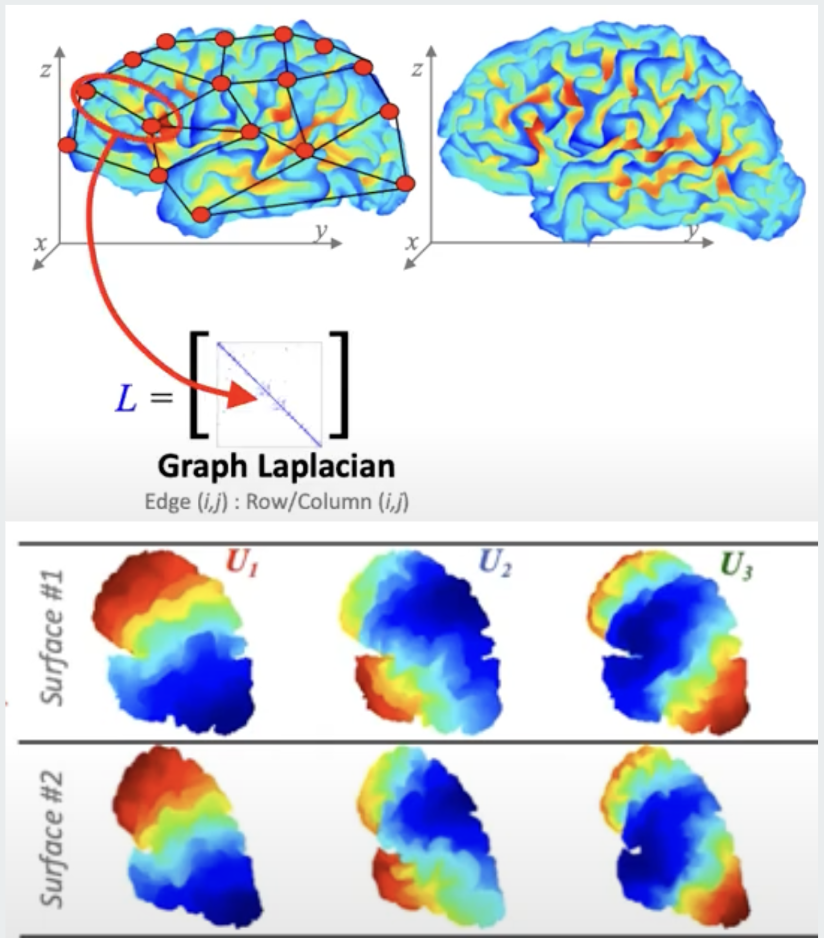

Karthik Pullalarevukarthik.pullalarevu [at] gmail.com I am an MLE 2 at HyperVerge leading the research for face & anti-spoofing team. I completed my undergraduate from Vellore Institute of Technology Chennai, receiving an Bachelors degree in Electronics and Computer Engineering. Currently, I work on multi-modal transformer architectures to identify fraud in KYC process. During my undergrad, my primary focus was on agritech and medical diagnosis using Computer Vision and AI advised by Prof. Sofana Reka and Dr. Kumar Rajamani. I also had an opportunity to intern at Ecole Polytechnique de Montreal, working with Prof. Hervé Lombaert at The Shape Team in Aug 2021. Research Interests: 2D/3D Computer Vision, Multi-modal Architectures, Medical Imaging Email / GitHub / Resume / Google Scholar / LinkedIn |
|
Senior MLE Jul '22 - Present |

B.Tech in ECM July '18 - May '22 |
Research Intern Aug '21 - Dec '21 |
News
- Sept 2024: Conducted a workshop on how AI systems work at Superbank and Flip office in Indonesia.
- Aug 2024: Represented the AI team at GFF 2024 to showcase deepfakes and liveness product.
- Apr 2024: Got promoted to MLE 2 and started leading face & antispoofing team.
- Feb 2024: Our Liveness solution passes PAD Level 2 testing to become ISO 30107-1/30107-3 Level 2 compliant.
- May 2023: Filed 3 patents in the US for the liveness solution which are in non-provisional stage!
- July 2022: Started working at HyperVerge as MLE 1.
- May 2022: Graduated from VIT Chennai.
- Nov 2021: Our paper on Semantic segmentation for plant phenotyping has been accepted to Springer-MTAP!
- Aug 2021: Joined the shape team at ETS Montreal, as a Mitacs Research Intern.
- May 2021: Selected for IAS-SRFP fellowship program in an Industrial Lab (TCS R&D)
Publications & Patents
Semantic Segmentation for Plant Phenotyping using Advanced Deep Learning Pipelines.Karthik Pullalarevu, Mansi Parashar, Sofana Reka S, Kumar T Rajamani, Mattias P. Heinrich Multimedia Tools and Applications, Springer (MTAP) 2022 Paper | BibTeX |
|
Robust Deep learning Model for Detection of Tomato Bacterial Spot on Novel DatasetKarthik Pullalarevu, Mansi Parashar, Sofana Reka S Scientific Reports, Nature (Submitted - April 2024) |
|

|
Patent - Hyperverge Inc
Status: Non-provisional Stage - USPTO |
Research
|

|
Shape analysis of complex brain surfacesGuides: Dr. Hervé Lombaert [Code] [Certificate] Developed an efficient Python pipeline for spectral alignment of brain mesh surfaces using reference mesh. Explored Gaussian Kernels with Graph Convolutional Neural Neworks (GCNNs) for brain surface analysis which is used for various downstream tasks. |
|
|
COVID-19 Severity classification using Tracheal densityGuides: Dr. Srinivasan Rajagopalan (Mayo Clinic) and Dr. Susan Elias In this work, we wish to classify severity of Covid infection using Chest CT scans. Extracted tracheal region using airway extractor module in Slicer 3D software and PyRadiomics to extract 140 tracheal density features. Applied feature engineering techniques (Lasso, Boruta) and compared performance across ML & DL models to classify tracheal infection. |
|
|
Federated Learning for Liver Tumor SegmentationGuide: Dr. Renuga Kanagavelu [A-STAR, Singapore] [Presentation] Created a federated learning simulation with 2 clients using flower platform where client-1 has liver and tumor data and client-2 has only liver scans. Achieved 0.793 dice score for client-2 on tumor segmentation task with a U-Net architecture model which was trained on only liver data. |
|
|
Diagnosis of Portal Hypertension using semantic-segmentationGuides: Dr. Viswanath P S and Monika Sharma [Presentation] [Certificate] Worked on semantic segmentation of hepatic vessels using 2D/3D U-Net architectures. Implemented Domain Adaptation by first training a model on vein segmentation and then fine-tuning it for portal vein segmentation. |
Key Technical Projects

|
Multiview pose synthesis from 2D objects[Code] Developed an end-end approach to edit pose of an object in a 2D image given the azimuth and polar values. The pipeline includes text-guided segmentation, image to 3D view generation followed by SD Inpainting and replacing the generated object in the masked image. |
|
|
Chest X-Ray Pneumonia DetectionMOOC, Udemy [Code] Built a Pneumonia detection model using Convolutional Neural Networks (CNN) and Transfer Learning. The model was trained on the Chest X-Ray dataset from Kaggle and achieved an accuracy of 98%. |